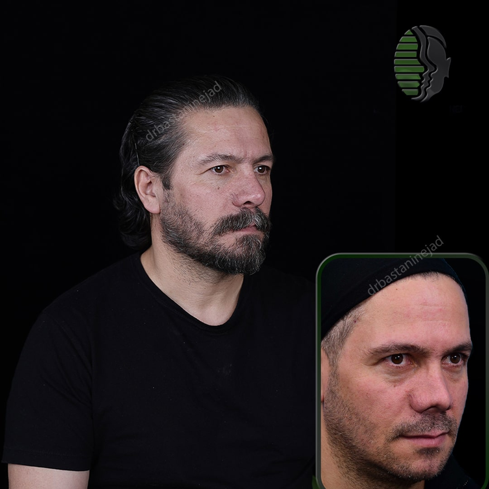
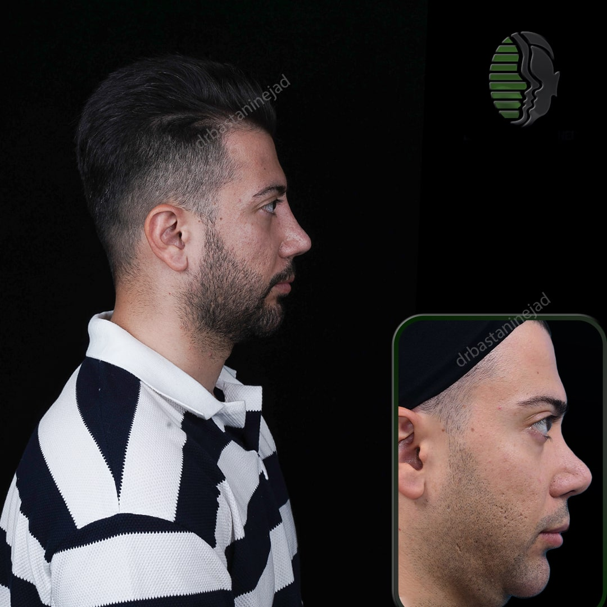
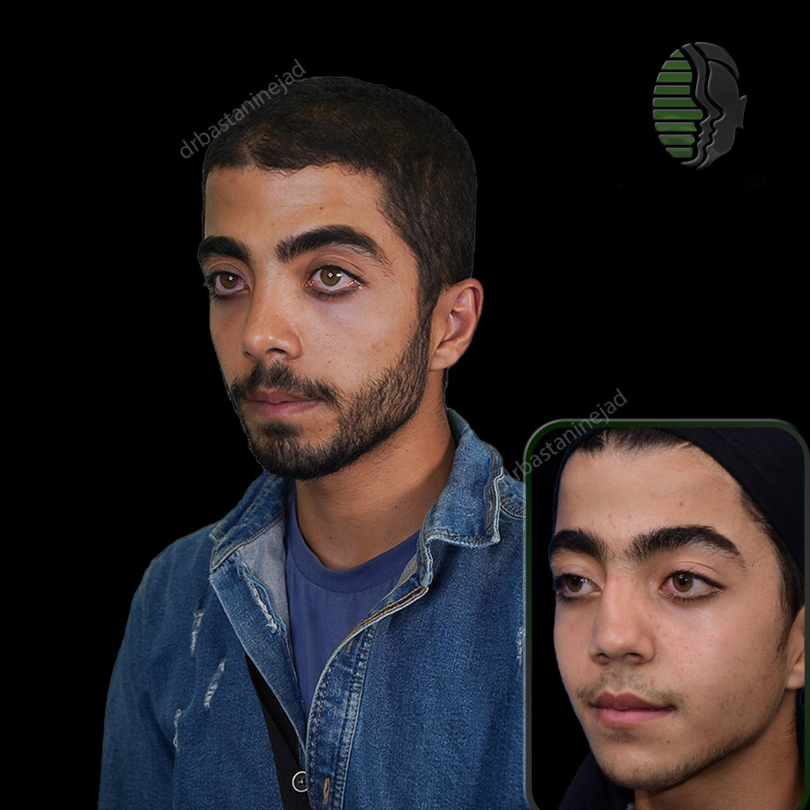

مقالات جراحی بینی
راهنمای جامع جراحی بینی، مراقبتهای قبل و بعد از عمل و پاسخ به سوالات رایج بیماران.
فهرست مقالات

جراحی بینی چیست و چه کسانی کاندید هستند؟
جراحی بینی یا رینوپلاستی یکی از رایجترین جراحیهای زیبایی در ایران است. در این راهنمای جامع، همه چیز را درباره انواع جراحی، کاندیداتوری، دوره بهبودی و نتایج واقعی توضیح میدهیم.
خواندن مقاله
جراحی بینی ترمیمی چیست؟
جراحی بینی ترمیمی یا رینوپلاستی ثانویه برای اصلاح نواقص باقیمانده از عمل قبلی — از قوز مجدد تا مشکلات تنفسی — انجام میشود.
ادامه مطلب
جراحی بینی گوشتی چیست؟
بینی گوشتی به خاطر پوست ضخیم و چرب، از نظر فنی چالشبرانگیزترین نوع رینوپلاستی است. در این مقاله روش جراحی و نتایج واقعی توضیح داده میشود.
ادامه مطلب
اقدامات ضروری قبل از جراحی بینی
آمادگی قبل از جراحی بینی بهاندازه خود عمل اهمیت دارد. این راهنما مهمترین اقدامات لازم را قبل از روز عمل مرور میکند.
ادامه مطلب
مراقبتهای بعد از جراحی بینی
نتیجه نهایی جراحی بینی تا حد زیادی به مراقبتهای دوره بهبودی بستگی دارد. راهنمای کامل هفته اول تا یک ماه بعد از عمل.
ادامه مطلب
جراحی بینی چیست؟
جراحی بینی یا رینوپلاستی چیست، چه کسانی کاندید هستند و چه نتایجی میتوان انتظار داشت — پاسخ به سوالات رایج.
ادامه مطلب
نکات مهم پس از برداشتن آتل بینی
پس از برداشتن آتل بینی چه باید کرد؟ روشهای کاهش تورم، توصیههای هفته اول و نکات تکمیلی مهم.
ادامه مطلبتاثیر تغذیه بر بهبودی بعد از جراحی بینی
رژیم غذایی مناسب قبل و بعد از جراحی بینی چه نقشی دارد؟ غذاهای مفید، غذاهای ممنوع و جدول زمانی تغذیه.
ادامه مطلب
۱۰ نکته در انتخاب جراح بینی
چگونه بهترین جراح بینی در تهران را انتخاب کنیم؟ از گواهینامه بورد تخصصی تا حساسیت هنری جراح.
ادامه مطلبجراحی بینی ترمیمی در تهران
همه چیز درباره جراحی ترمیمی بینی در تهران — چالشها، مراحل، جدول زمانی بهبودی و نکات مهم انتخاب جراح.
ادامه مطلبجراحی بینی مردانه در تهران
جراحی بینی مردانه با زنانه چه تفاوتی دارد؟ آناتومی، تکنیکهای خاص و دستیابی به نتیجه طبیعی و مردانه.
ادامه مطلب
عوارض جراحی بینی و راههای پیشگیری
آشنایی با عوارض احتمالی جراحی بینی و روشهای پیشگیری — اطلاعاتی که هر بیمار پیش از تصمیمگیری باید بداند.
ادامه مطلب